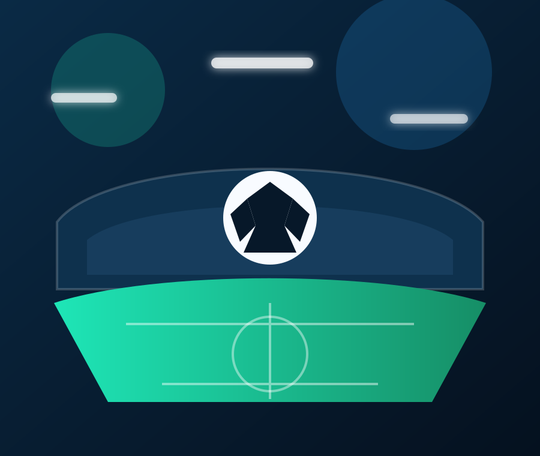
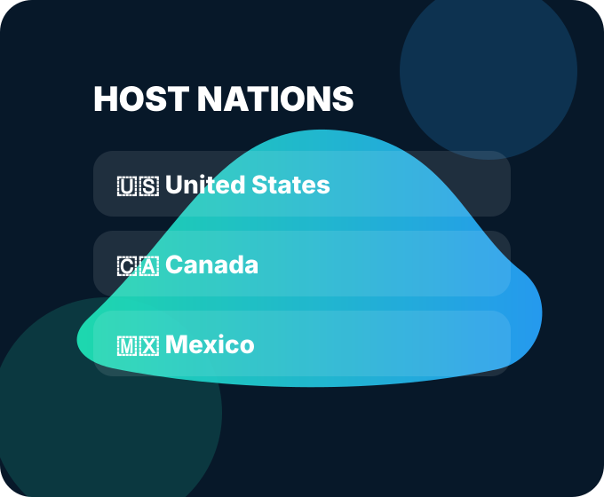

United States • Canada • Mexico
Follow FIFA World Cup 2026 live scores in style.
A professional, responsive match center with live status cards, tournament imagery, host city highlights, and GitHub-ready static files.
48Teams
104Matches
16Host cities

LIVE CENTER
Match center
Live FIFA 2026 Scores
Loading scores…
Featured fixtures
Upcoming spotlight matches

Developer note
Easy to connect to a real live-score API
This template runs immediately with realistic demo data. To make it truly live, add your API key in app.js and switch the provider function to API-Football, Sportmonks, TheSportsDB, or another licensed football data feed.